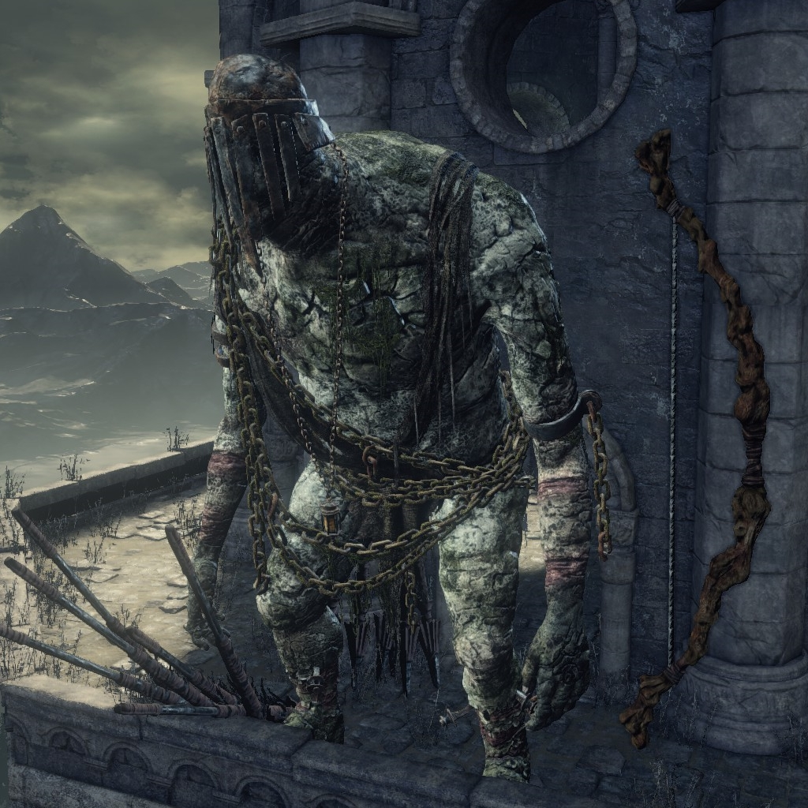

← Volver
← Volver
El Gigante del Asentamiento es un NPC de Dark Souls III, localizado en lo alto de la torre que se encuentra a mitad de camino en el Asentamiento de los No Muertos.
¿Dónde se puede encontrar a la Guardiana de Fuego en Dark Souls III? En lo alto de la torre en el Asentamiento de los No Muertos. La torre tiene dos elevadores. Uno que va hasta la parte baja y otro hasta la parte alta. Si estás en el nivel medio y el elevador incorrecto se encuentra en este nivel, simplemente actívalo y rueda fuera. Luego espera a que el otro elevador llegue.
Si eliges la Rama de Abedul Blanco como regalo funerario, el gigante será inmediatamente amistoso y no habrá necesidad de hablar con él en absoluto.
De otra forma, encuéntralo y rápidamente habla con él, eligiendo "Hacer las Paces" para que te entregue un símbolo de amistad. Este símbol es una Rama de Abedul Blanco única que incluye la frase "Buen amigo, no golpear" en su descripción. La forma en que él te diferencia de los demás Huecos es justamente esta descripción grabada en la rama, razón por la cual deberás guardarla en tu inventario en lugar de usarla. Si usas la rama, se volverá nuevamente hostil y tendrás que hacer las paces con él de nuevo.
De forma alternativa, si el jugador recolecta 6 Ramas Blancas Jóvenes, dos junto a cada abedul blanco, así como también la Vid de Bellvine el Santo Árbol, la Corona del Crepúsculo y el Fragmento de Hueso de No Muerto que se haya alrededor del primer abedul, encontrarás al Gigante muerto de forma inexplicable cuando lo visites (todos los ítems que se relacionan con su muerte tendrán la opción "examinar" para levantarlos, en vez del "saquear" habitual).
Es posible que el gigante se bugee y te ataque aún cuando tengas la rama correcta en tu inventario. Si eliges la Rama de Abedul Blanco como tu regalo funerario y la colocas en tu caja de almacenamiento en la hoguera afuera del Asentamiento de los No Muertos, el gigante no reconocerá su amistad. Sin embargo, más importante, quitar la rama especial de tu caja de almacenamiento mientras estés en el Asentamiento de los No Muertos no te concederá el reconocimiento del gigante como se supone. Sus flechas te harán daño y él seguirá disparándote. (Podemos asumir que este también será el caso también para la rama entregada por el Gigante, aunque esto no ha sido probado). Para arreglar este bug, deberás salir del Asentamiento de los No Muertos (transportarte al Santuario del Enlace de Fuego funciona bien en este caso) y regresar al Asentamiento con la rama ya en tu inventario. Esto ha sido testeado y comprobado efectivo.

 ↑
↑